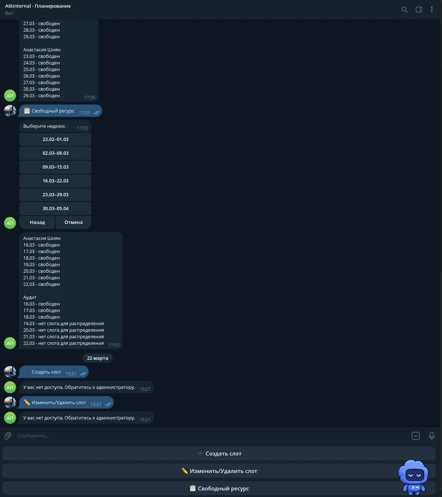

Кейс • Odoo × Telegram • Планирование
Atkinternal: Telegram-бот для планирования загрузки сотрудников
Команда Студии разработала связанный с Odoo бот для работы со слотами сотрудников и поиска свободных ресурсов на выбранные даты.

Исходная задача
Atkinternal требовался Telegram-бот для планирования загрузки сотрудников по данным Odoo. Через бот пользователь должен создавать, изменять и удалять слоты, а также находить свободных сотрудников на выбранные даты.
Сложности и ограничения
В одном интерфейсе нужно было совместить действия, которые меняют расписание, и запросы на поиск свободных ресурсов. Для операций со слотами бот учитывает доступ пользователя и сообщает, если прав недостаточно; это поведение видно в интерфейсе кейса.
Что реализовано
Команда Студии разработала Telegram-бота с четырьмя рабочими сценариями на основе данных Odoo:
- создание слота загрузки сотрудника;
- изменение существующего слота;
- удаление слота;
- поиск свободных сотрудников на выбранные даты.
Текущий результат
В феврале 2026 года разработка бота была завершена. Пользователь может выбрать период и получить список свободных сотрудников из Odoo; пользователям с доступом также доступны команды создания, изменения и удаления слотов.
Похожие задачи: интеграции Odoo с другими сервисами и отчёты Buildflow через Telegram-бота.
Нужен бот для работы с Odoo?
Расскажите, какие действия нужны сотрудникам в Telegram и какие данные хранятся в Odoo.
Оставить заявку